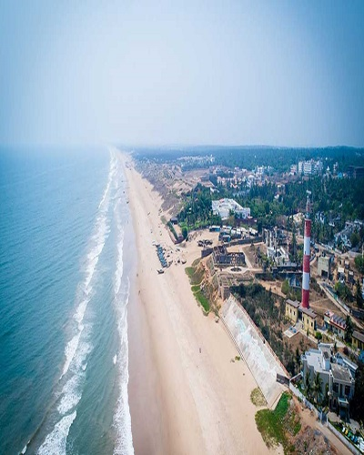
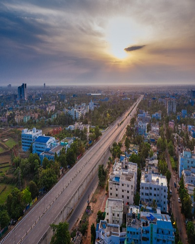
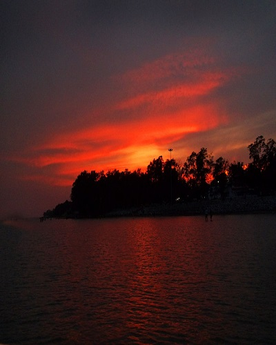
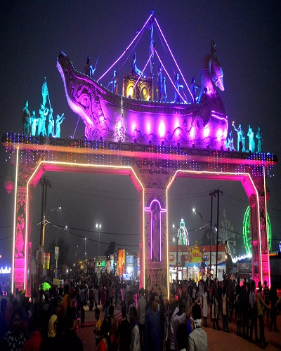
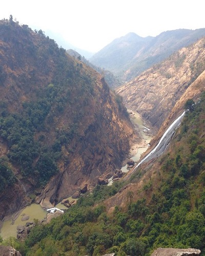
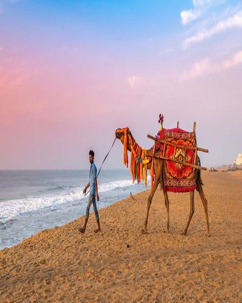
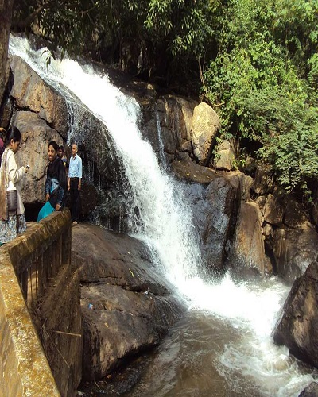
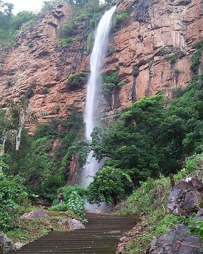
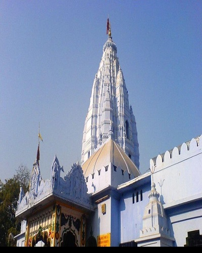
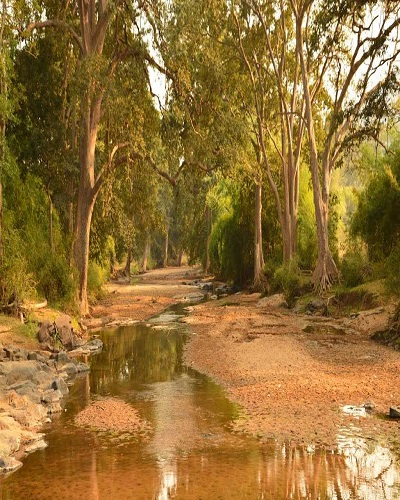

The best time to visit Baripada is from November to February as the temperature ranges between 15 to 30 degrees Celsius.Read More
Baripada

Berhampur
The time between October to June is the best time to visit Berhampur. Read More
Berhampur

Bhubaneswar
Winter. October – mid March is the best time to visit the city. The temperature remains low and the weather is very pleasant and cool.Read More
Bhubaneswar

Chandipur
Winter (October-March) - is the ideal season to visit Chandipur. Read More
Chandipur
Chilika Lake
October to March would be the best season to visit Chilka, because it is the time when the lake is visited by the migrating birds.Read More
Chilika Lake

Cuttack
The best time to visit this city is from October to March.Read More
Cuttack
Gopalpur
The four-month period from November till February is the best time to visit Gopalpur.Read More
Gopalpur

Jeypore
October to February are the best months for a trip to Jeypore.Read More
Jeypore
Konark
The months of September to March are considered the best time to visit Konark.Read More
Konark

Puri
Months ranging from October to February are ideal for a visit to Puri as the climate stays cool, pleasant, and soothing during this time. Read More
Puri

Rayagada
Winter(October - February) is the best time to visit Rayagada since the temperature is very pleasant and the forests, rivers and waterfalls have been reborn during the monsoon.Read More
Rayagada

Rourkela
October to March are the best months to visit Rourkela. Read More
Rourkela

Sambalpur
The months from September to March are considered the best time to visit Sambalpur as the weather remains changing in the favour of travellers.Read More
Sambalpur
Talasari Beach
An ideal time to visit the place would be in months from October to December. One can even visit and enjoy the lovely landscape of this place in the month of February.Read More
Talasari Beach

Tikarpada
Tikarpada has tropical climatic conditions. September to March are the best months regarding weather to visit this place.Read More
Tikarpada
Udaygiri and Khandagiri Caves
The best time to visit is from 9 am or 10 am and take about 4hours to see Udayagiri and Khandagiri caves.Read More
Udaygiri and Khandagiri Caves
Sri Jagannath Puri Temple
Months ranging from October to February are ideal for a visit to Puri as the climate stays cool, pleasant, and soothing during this time.Read More